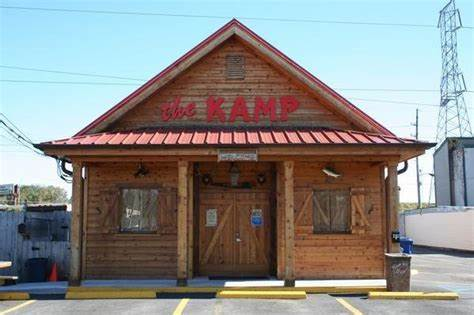

<center>
    <link rel="preconnect" href="https://fonts.googleapis.com">
<link rel="preconnect" href="https://fonts.gstatic.com" crossorigin>
<link href="https://fonts.googleapis.com/css2?family=Permanent+Marker&display=swap" rel="stylesheet">
<div id="MenuBar">
    <a href="index.html" id="Home">Home</a>
    <a href="about.html">About Us</a>
    <a href="events.html">Events</a>
    <a href="prices.html">Prices</a>
    <a href="ages.html">Ages</a>
</div>
<h1>The Kamp</h1>

</center>
<style>
    img {
        border-radius: 50%;
        box-shadow: 1px 2px 22px 0px grey;
    }
    #Home {
        text-decoration: underline;
    }
    h1 {
        padding-top: 200px;
        color: red;
        font-size: 100px;
        text-shadow: 2px 2px 8px black;
    }
    body {
        font-family: 'Permanent Marker', cursive;
    }
    #MenuBar {
        position: fixed;
        font-size: 60px;
        width: 100%;
        background: tan;
        height: 90px;
    }
    a {
        color: white;
        text-decoration: none;
        padding: 10px;
        font-family: 'Permanent Marker', cursive;
    }
    a:hover {
        text-decoration: underline;
    }
</style>